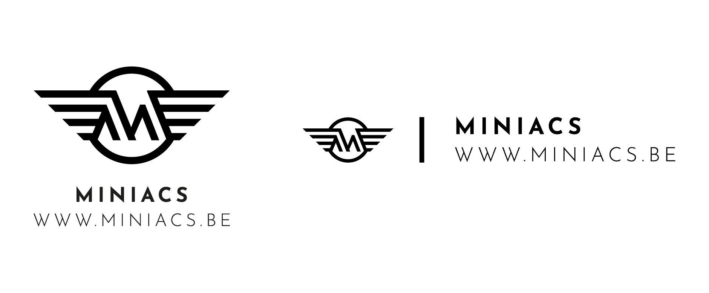

De primaire kleur van het logo is zwart in combinatie met zwart een dekking van 15%. Meer info hierover vind je terug bij de pagina KLEUR.
Het is toegestaan om te spelen met de kleuren Indien er een achtergrondkleur gebruikt wordt, dient de primaire kleur vervangen te worden naar absoluut wit (in combinatie met dekking 25%). Enkel indien het contrast van het logo met de achtergrond onvoldoende is moet men zwart behouden.
!! ER WORDT NOOIT EEN ANDERE KLEUR BUITEN ZWART OF WIT GEBRUIKT VOOR HET LOGO EN DE ACHTERGRONDAFBEELDING !!
Zie onderstaande voorbeelden voor verduidelijking.
Het logo moet altijd proportioneel geschaald worden. Het is niet toegestaan het logo aan te passen of de schikking ervan te wijzigen. De enige alternatieve versie die ook gebruikt mag worden vind je hieronder (rechts) terug. Deze versie wordt veelal gebruikt links onderaan een foto. De kleur (wit of zwart) is afhankelijk van de achtergrondkleur van de foto.
